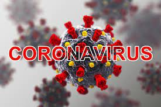
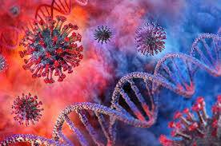
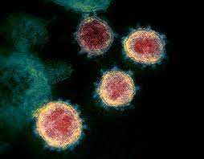
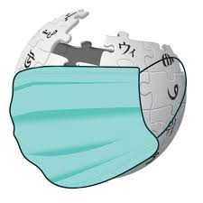
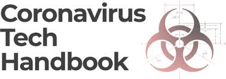
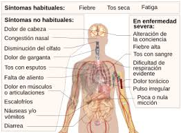
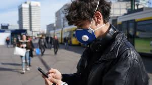

Signs and symptoms
During the initial outbreak in Wuhan, the virus and disease were commonly referred to as "coronavirus" and "Wuhan coronavirus",[19][20][21] with the disease sometimes called "Wuhan pneumonia".[22][23] In the past, many diseases have been named after geographical locations, such as the Spanish flu,[24] Middle East respiratory syndrome, and Zika virus.[25] In January 2020, the World Health Organization (WHO) recommended 2019-nCoV[26] and 2019-nCoV acute respiratory disease[27] as interim names for the virus and disease per 2015 guidance and international guidelines against using geographical locations or groups of people in disease and virus names to prevent social stigma.[28][29][30] The official names COVID‑19 and SARS-CoV-2 were issued by the WHO on 11 February 2020.[31] The Director-General, Tedros Adhanom explained that CO stands for corona, VI for virus, D for disease, and 19 for 2019, the year in which the outbreak was first identified.[32] The WHO additionally uses "the COVID‑19 virus" and "the virus responsible for COVID‑19" in public communications.[31][33]
Main article: Symptoms of COVID-19
Symptoms of COVID-19
Symptoms of COVID-19 are variable, ranging from mild symptoms to severe illness. Common symptoms include headache, loss of smell (anosmia) and taste (ageusia), nasal congestion and runny nose, cough, muscle pain, sore throat, fever, diarrhea, and breathing difficulties.[36] People with the same infection may have different symptoms, and their symptoms may change over time. Three common clusters of symptoms have been identified: one respiratory symptom cluster with cough, sputum, shortness of breath, and fever; a musculoskeletal symptom cluster with muscle and joint pain, headache, and fatigue; a cluster of digestive symptoms with abdominal pain, vomiting, and diarrhea.[36] In people without prior ear, nose, and throat disorders, loss of taste combined with loss of smell is associated with COVID-19 and is reported in as many as 88% of cases.[37][38][39]
Of people who show symptoms, 81% develop only mild to moderate symptoms (up to mild pneumonia), while 14% develop severe symptoms (dyspnea, hypoxia, or more than 50% lung involvement on imaging) and 5% of patients suffer critical symptoms (respiratory failure, shock, or multiorgan dysfunction). At least a third of the people who are infected with the virus do not develop noticeable symptoms at any point in time. These asymptomatic carriers tend not to get tested and can spread the disease. Other infected people will develop symptoms later, called "pre-symptomatic", or have very mild symptoms and can also spread the virus.
As is common with infections, there is a delay between the moment a person first becomes infected and the appearance of the first symptoms. The median delay for COVID-19 is four to five days.[46] Most symptomatic people experience symptoms within two to seven days after exposure, and almost all will experience at least one symptom within 12 days.
Most people recover from the acute phase of the disease. However, some people – over half of a cohort of home-isolated young adults[48][49] – continue to experience a range of effects, such as fatigue, for months after recovery, a condition called long COVID; long-term damage to organs has been observed. Multi-year studies are underway to further investigate the long-term effects of the disease.
This is related to professional sport and dual career, but the University of Latvia Sports Center (LU SC) offers one of the most extensive and at the same time the highest quality sports opportunities for every student of the university.


Transmission
COVID-19 is mainly transmitted when people breathe in air contaminated by droplets and small airborne particles containing the virus. Infected people exhale those particles as they breathe, talk, cough, sneeze, or sing.[52][53][54][55] Transmission is more likely when people are physically close. However, infection can occur over longer distances, particularly indoors.
Infectivity can occur 1–3 days before the onset of symptoms.Infected persons can spread the disease even if they are pre-symptomatic or asymptomatic. Most commonly, the peak viral load in upper respiratory tract samples occurs close to the time of symptom onset and declines after the first week after symptoms begin. Current evidence suggests a duration of viral shedding and the period of infectiousness of up to 10 days following symptom onset for persons with mild to moderate COVID-19, and a up to 20 days for persons with severe COVID-19, including immunocompromised persons.
Infectious particles range in size from aerosols that remain suspended in the air for long periods of time to larger droplets that remain airborne or fall to the ground.[ Additionally, COVID-19 research has redefined the traditional understanding of how respiratory viruses are transmitted. The largest droplets of respiratory fluid do not travel far, and can be inhaled or land on mucous membranes on the eyes, nose, or mouth to infect.[61] Aerosols are highest in concentration when people are in close proximity, which leads to easier viral transmission when people are physically close,but airborne transmission can occur at longer distances, mainly in locations that are poorly ventilated;[61] in those conditions small particles can remain suspended in the air for minutes to hours.
The number of people generally infected by one infected person varies; as only 10 to 20% of people are responsible for the disease's spread.[65] It often spreads in clusters, where infections can be traced back to an index case or geographical location.[66] Often in these instances, superspreading events occur, where many peopleSevere acute respiratory syndrome coronavirus 2 (SARS-CoV-2) is a novel severe acute respiratory syndrome coronavirus. It was first isolated from three people with pneumonia connected to the cluster of acute respiratory illness cases in Wuhan. All structural features of the novel SARS-CoV-2 virus particle occur in related coronaviruses in nature.
Outside the human body, the virus is destroyed by household soap, which bursts its protective bubble.
SARS-CoV-2 is closely related to the original SARS-CoV. It is thought to have an animal (zoonotic) origin. Genetic analysis has revealed that the coronavirus genetically clusters with the genus Betacoronavirus, in subgenus Sarbecovirus (lineage B) together with two bat-derived strains. It is 96% identical at the whole genome level to other bat coronavirus samples (BatCov RaTG13). The structural proteins of SARS-CoV-2 include membrane glycoprotein (M), envelope protein (E), nucleocapsid protein (N), and the spike protein (S). The M protein of SARS-CoV-2 is about 98% similar to the M protein of bat SARS-CoV, maintains around 98% homology with pangolin SARS-CoV, and has 90% homology with the M protein of SARS-CoV; whereas, the similarity is only around 38% with the M protein of MERS-CoV.



Viral testing
The standard methods of testing for presence of SARS-CoV-2 are nucleic acid tests, which detects the presence of viral RNA fragments.[132] As these tests detect RNA but not infectious virus, its "ability to determine duration of infectivity of patients is limited."The test is typically done on respiratory samples obtained by a nasopharyngeal swab; however, a nasal swab or sputum sample may also be used. Results are generally available within hours.[128] The WHO has published several testing protocols for the disease.
Several laboratories and companies have developed serological tests, which detect antibodies produced by the body in response to infection. Several have been evaluated by Public Health England and approved for use in the UK.
The University of Oxford's CEBM has pointed to mounting evidence that "a good proportion of 'new' mild cases and people re-testing positives after quarantine or discharge from hospital are not infectious, but are simply clearing harmless virus particles which their immune system has efficiently dealt with" and have called for "an international effort to standardize and periodically calibrate testing"[140] On 7 September, the UK government issued "guidance for procedures to be implemented in laboratories to provide assurance of positive SARS-CoV-2 RNA results during periods of low prevalence, when there is a reduction in the predictive value of positive test results".Chest CT scans may be helpful to diagnose COVID‑19 in individuals with a high clinical suspicion of infection but are not recommended for routine screening.[130][142] Bilateral multilobar ground-glass opacities with a peripheral, asymmetric, and posterior distribution are common in early infection.[130][143] Subpleural dominance, crazy paving (lobular septal thickening with variable alveolar filling), and consolidation may appear as the disease progresses.[130][144] Characteristic imaging features on chest radiographs and computed tomography (CT) of people who are symptomatic include asymmetric peripheral ground-glass opacities without pleural effusions.
Many groups have created COVID‑19 datasets that include imagery such as the Italian Radiological Society which has compiled an international online database of imaging findings for confirmed cases.[146] Due to overlap with other infections such as adenovirus, imaging without confirmation by rRT-PCR is of limited specificity in identifying COVID‑19.[145] A large study in China compared chest CT results to PCR and demonstrated that though imaging is less specific for the infection, it is faster and more sensitive.[129]

